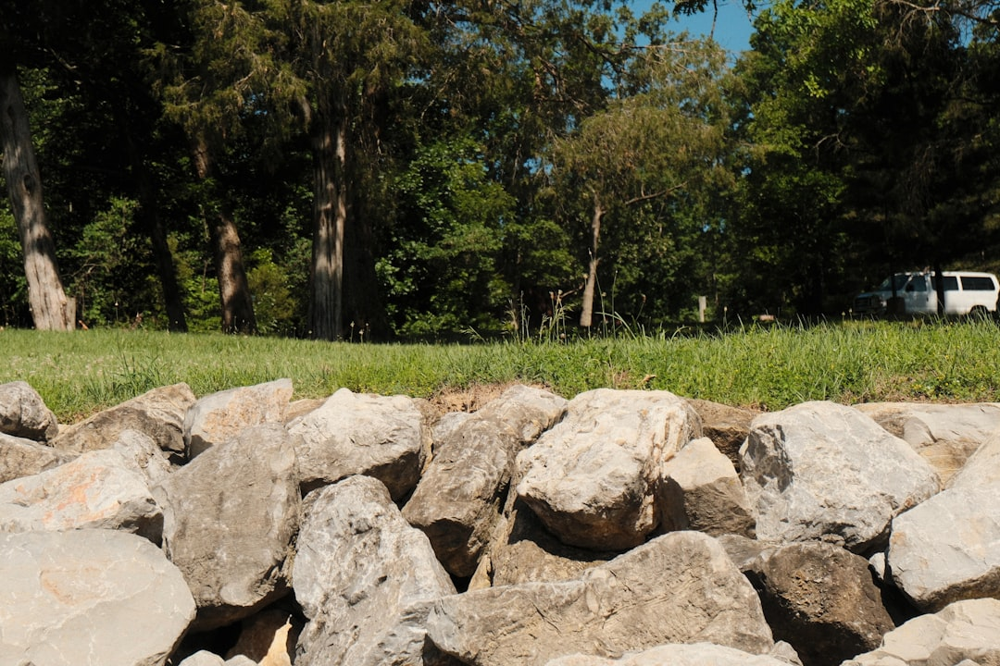

For homeowners comparing retaining wall builders geelong options, the useful first question is whether the wall, site access, drainage and permit position have been described clearly enough for a practical quote.
Retaining Wall Builders Geelong Explained
Retaining Wall Geelong frames retaining wall planning around slope, wall condition, access and the water path before a material or repair route is locked in. That order is sensible because the visible face is only one part of the wall system. Retained height, nearby loads, drainage and the working area all affect whether a preferred finish can become a buildable wall.
A useful first conversation should describe the suburb or postcode, approximate exposed height and length, whether the wall already exists or is proposed, any visible movement or water, nearby fences or driveways, access width and available photos or plans. Those details do not replace a site assessment, but they help separate a broad enquiry from a quote request that can be reviewed properly.
- Existing wall: note movement, leaning, cracking, water staining or failed drainage if those signs are visible.
- New wall: describe the slope, retained area, boundary position and any structures near the proposed alignment.
- Access: explain whether machinery, spoil removal and material delivery are likely to be constrained.
Material Choice Follows Height, Drainage And Access
The source page lists concrete sleeper, timber sleeper, masonry block, segmental block, rock and gabion systems, plus retaining wall drainage. The practical distinction is not that one material is always better. Each option answers a different mix of footprint, finish, maintenance, access and retained-load questions.
Concrete sleepers are described as steel-reinforced sleepers between galvanised posts for durable replacement walls, boundaries and stepped Geelong house pads. Timber sleepers are positioned for low terraces and garden boundaries where design life, drainage and future replacement are understood. Masonry block work suits reinforced and core-filled retention where a compact footprint and rendered finish are appropriate for the site. Segmental blocks rely on interlocking systems and may form landscaped terraces or engineered reinforced-soil walls where foundations, drainage and geogrid are designed together. Rock and gabion walls can suit free-draining retention where the site can accommodate the required footprint, batter and construction access.
When comparing retaining wall builders geelong homeowners should ask each contractor to explain why the proposed system fits the retained height, water path, access and neighbouring loads, rather than asking for a material price in isolation.
Drainage Should Be Written Into The Scope
The published guidance is direct that retaining wall drainage should not hide in exclusions. A quote should explain aggregate, filter fabric, subsoil pipe and the lawful discharge point. That does not mean every site uses the same drainage detail. It means the water path should be discussed as part of the wall system, not treated as a late allowance.
For a replacement wall, ask whether demolition, spoil, drainage, structural work, approvals and exclusions are separated in writing. For a proposed wall, ask how surface grading and subsoil drainage will be coordinated with the finished alignment. If the wall is near a boundary, driveway, fence or other load, the drainage plan should be considered alongside the retained height and adjoining-property position.
A related retaining wall Geelong guide can help readers keep the broader local planning questions separate from the narrower contractor quote comparison.
Permit And Boundary Questions To Settle Early
The source page states that a building permit is required in Victoria for a retaining wall 1 metre or more high. It also notes that a lower wall may still require one when associated with other building work or when it protects adjoining property, and that a registered building surveyor should assess the site.
Planning approval is a separate question. Overlays, zoning, easements and title restrictions can affect what can be built even where the building-permit question appears straightforward. A wall near a boundary also deserves early review because excavation or retention may affect adjoining land. If an easement crosses the proposed alignment, the title and any required authority or council consent should be checked before the wall position is fixed.
None of these checks are helped by guessing. Put the title, plans, site photos and wall dimensions in front of the relevant professionals before demolition or excavation begins.
Who This Applies To
This guide is most useful for Geelong property owners trying to organise the first project brief before asking for a quote. It applies to replacement walls, proposed garden terraces, boundary walls, stepped house pads and wall drainage enquiries where the final material has not yet been confirmed.
It is less useful for readers looking for a binding price, engineering design or permit decision from an article. Those decisions depend on the actual retained height, soil, slope, loads, drainage, title constraints and access. When speaking with retaining wall builders geelong owners should keep the discussion evidence based: dimensions, photos, plans, boundary position, water path and visible defects will usually move the conversation further than a preferred wall appearance.
- Measure the visible wall. Record the approximate exposed height, length and any stepped sections before requesting a review.
- Photograph the site. Include wide photos for access and close photos of movement, water marks, drainage points or failed areas.
- Check constraints. Look for boundary, easement, title, overlay or adjoining-property issues before fixing the alignment.
- Ask for a written scope. Request separate detail for demolition, structure, drainage, approvals, exclusions and any assumptions.
| Question | Why it matters | What to provide |
|---|---|---|
| Is the wall existing or proposed? | Repair, replacement and new work can raise different access and demolition issues. | Photos, approximate age if known, and visible movement or water. |
| How high and long is it? | Retained height and length shape material, drainage and permit discussion. | Approximate exposed height, total length and any stepped sections. |
| Where will water go? | Drainage is part of the wall system and should not sit hidden in exclusions. | Surface fall, wet areas, outlets and any known stormwater constraints. |
| What is nearby? | Fences, driveways, boundaries and adjoining property can affect review needs. | Boundary position, nearby loads and any plans or title information. |
This guide covers early site checks, material comparison, drainage scope and permit questions for Geelong retaining wall projects.